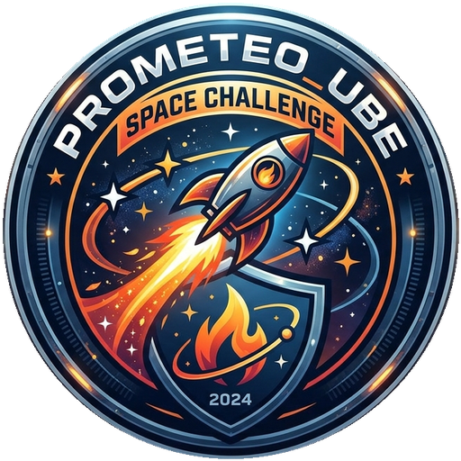

Extintores de niebla fina
Desarrollados para la ISS, hoy protegen edificios y museos con menos agua y menos daños colaterales.

Prometeo_UBENASA · Physical Sciences Informatics · Seguridad contra incendios
Durante décadas, la NASA ha estudiado el comportamiento de las llamas y el fuego en microgravedad, recopilando una gran cantidad de datos experimentales. Este conocimiento es más importante que nunca ahora que la humanidad se prepara para regresar a la Luna y continuar la exploración de Marte; sin embargo, el volumen de resultados dificulta su búsqueda, comparación y comprensión.
Prometeo_UBE es un panel interactivo que resume, clasifica e interpreta esos hallazgos para brindar información valiosa sobre seguridad contra incendios en la exploración espacial humana.
01 · Simulación animada
Varía la gravedad, la atmósfera y el combustible. Observa cómo cambia la forma de la llama, el humo y la respuesta de cada sensor. La temperatura adiabática se toma de la prueba real más cercana del conjunto Flame Design (PSI-10).
02 · Datos experimentales
Cuatro conjuntos reales del repositorio PSI de la NASA. Filtra, ordena, grafica y envía cualquier prueba de Flame Design al simulador.
03 · Clasificación
Elige tu perfil y el uso que buscas: las investigaciones se reordenan según su relevancia para la seguridad contra incendios.
Selecciona hasta 3 tarjetas con «Comparar».
04 · Asistente de análisis
Motor de análisis local: interpreta tu pregunta, busca en el catálogo y calcula estadísticas sobre los datos cargados. No envía información a ningún servidor.
05 · Mini juego
Eres el astronauta de guardia. Cada llama pide un agente distinto: elige bien, vigila tus tanques y ten cuidado, en microgravedad el extintor te empuja hacia atrás. Aguanta oleadas dentro de la nave y en una caminata espacial.
Juego educativo y simplificado: no sustituye procedimientos reales de seguridad. En el vacío no hay aire que alimente una llama; en el juego, el fuego exterior representa fugas de propelente que se queman al mezclarse con oxígeno expulsado.
06 · Mini juego 3D
Flota por el túnel de la estación en microgravedad. Las llamas de metano, etano, propano y más vienen de frente, y cada mes de misión la velocidad sube y aparecen llamas nuevas. Esquívalas y recoge tanques de O₂, CO₂, H₂O, N₂ y CO para sumar puntos y seguir con vida.
Juego educativo y simplificado: no sustituye procedimientos reales de seguridad. En la vida real no se recogen tanques en pleno incendio: el monóxido de carbono (CO), por ejemplo, es un gas tóxico que se debe evitar.
07 · Del espacio a la Tierra
Desarrollados para la ISS, hoy protegen edificios y museos con menos agua y menos daños colaterales.
La tecnología creada para el transbordador distingue humo de polvo y reduce falsas alarmas, útil en minería e industria.
Ver spin-off →Trajes espaciales inspiraron tanques de aire más ligeros y vestimenta protectora mejorada.
Tanques de aire → · Indumentaria →Modelos de hollín, llamas frías y combustión pobre mejoran eficiencia y reducen emisiones en la Tierra.
08 · Fuentes